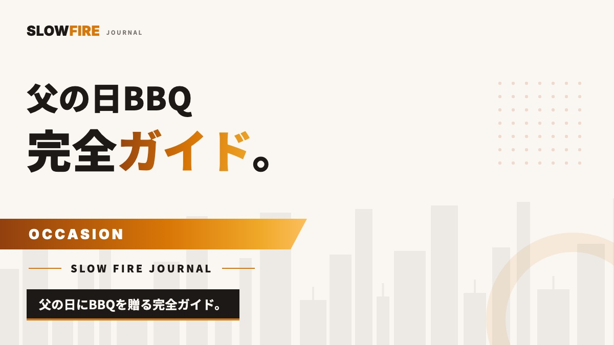

父の日BBQ完全ガイド【2026年版】— お父さんが感動する1日の作り方
お父さんに「ありがとう」って、面と向かうとなかなか言えないものですよね。僕もそうでした。2026年の父の日は6月21日（日）です。一年に一度くらい、煙と火と肉に気持ちを乗せて伝える日があってもいいんじゃないかなと思うんです。父の日BBQは、ケーキやネクタイよりも、ずっと長く記憶に残ってくれます。大事なのは一つだけ。主役はあくまでお父さんで、料理はそのための手段、感動こそが目的だということです。この記事では、メニュー設計からサプライズ演出、予算別プラン、準備チェックリスト、当日のタイムテーブルまで、父の日BBQを最高の1日にするためのことを、ぜんぶお話ししていきますね。

なぜ父の日にBBQが効くのか
父の日のプレゼント、毎年悩みませんか。市場で上位を占めるのは「ネクタイ」「お酒」「健康グッズ」あたりですよね。どれも悪くはないと思います。ただ、こういうものってお父さんが「使う」ものであって、「体験する」ものではない、というのがちょっと惜しいところかなと思うんです。
その点、BBQはちょっと違うんですよね。煙の匂い、炭がはぜる音、火に照らされた家族の顔、はじめて目にする肉の塊。こういうものは「体験記憶」として、ネクタイの何倍も長く残ってくれます。心理学の世界でも、人は所有物より体験のほうを高く評価する傾向があると言われています（Cornell大学Gilovich教授の研究です）。
それともう一つ。BBQって、お父さんが昔から「主役を張りやすい」シーンでもあるんですよね。火を扱って、肉を切って、人をもてなす——これは多くのお父さんが、心のどこかで「やってみたかった」役割なんじゃないかなと思います。プレゼントは「物」より「役」のほうが、お父さんは喜んでくれるものなんですよね。
主役設計 — お父さんを王様にする5つの作法
父の日BBQで一番やってはいけないのは、「お父さんが下働きする日」にしてしまうことです。普段から休日にBBQを仕切っているお父さんほど、これになりがち。「いつもと同じ作業」を父の日にやらせては、感動はありません。
作法1：買い出しと下ごしらえは家族が完結させる
当日のお父さんは、グリルの前に「現れるだけ」でいい状態にする。スーパー巡り・氷の調達・肉の下味づけ・野菜のカットは、すべて前日までに家族側で済ませておきます。お父さんは焼く・食べる・笑うだけの「来賓」です。
作法2：お父さん専用の「席」を作る
テーブルの一番見晴らしのいい場所、もしくはグリルの正面に、お父さんだけのチェアと飲み物を用意します。座って眺めているだけで満たされる位置取り。ここに父の日メッセージカードを忍ばせておくと、序盤から泣かせにいけます。
作法3：肉の「お披露目」を儀式化する
厚切りリブアイやトマホークを焼く前に、生の塊のままお父さんに見せる儀式を入れます。「これ、お父さんのために用意した1.2kgのリブアイです」と。スーパーでは絶対に買わないサイズの肉を目の前にしたお父さんの顔は、ネクタイを開けたときの100倍動きます。
作法4：焼く役は「主導権を譲る」
火を扱うのが好きなお父さんなら、最後の焼き目だけはお父さんに任せます。低温調理は家族が済ませておき、「あとは焼き目だけ、お願いします」と差し出す。これだけでお父さんは「主役」と「職人」の二役を同時に務められます。
作法5：写真は「お父さん中心」で撮る
BBQの写真は肉に寄りがち。父の日は意識して、お父さんが肉を切る瞬間・笑う瞬間・乾杯する瞬間をフレームに収めます。後日アルバム化して送ると、二重のプレゼントになります。
メニュー設計 — 父の日に焼くべき肉
父の日のメニューは、いつものBBQと「明確に違う」必要があります。サンチョや手羽先だけでは、特別感が出ません。「これは父の日のために用意した」と一目で分かる主役肉を1つ、必ず立てます。
主役候補1：厚切りリブアイ（4cm以上）
父の日BBQで最もおすすめなのが、厚切りリブアイ。スーパーで売っている1cm厚の薄切りとは全くの別物です。4cm以上の塊をリバースシア法で焼くと、切り口がエッジまで均一なロゼ色になり、お父さんが切る瞬間に家族から歓声が上がります。
主役候補2：プライムリブ（骨付きリブロース）
「お父さんに振る舞う1品」として最も格式高いのがプライムリブ。骨付きで存在感があり、低温オーブン＋最後の高温仕上げで誰でもステーキハウス級の仕上がりに。3〜4人なら1.5kg、5〜6人なら2.5kgが目安です。
主役候補3：ブリスケット（牛肩バラ）
時間が許すなら、12時間スモークのブリスケットがドラマチック。前夜から仕込んで、父の日当日の昼前にスライスする「物語性」が、お父さんを感動させます。家族が「お父さんのために徹夜した」というストーリーも、立派なギフトです。
主役候補4：プルドポーク
手間の割にコスパが高く、子供も食べやすいのがプルドポーク。肉を「ほぐす」という独特の儀式があり、お父さんに「ほぐし役」をお願いするとそれだけで楽しい。バンズに挟んで食べるアメリカンスタイルは、子供達も大喜びです。
脇役：彩りと食感を担当する野菜・小皿
主役肉を引き立てる脇役は、BBQおすすめ食材ガイドに詳しいですが、父の日は特に「彩り」が重要。トマト・ズッキーニ・とうもろこし・グリル椎茸・グリルレモンを並べると、写真映えが一気に上がります。
| 主役肉 | 調理時間 | 難易度 | 映え度 | お父さん適性 |
|---|---|---|---|---|
| 厚切りリブアイ | 1.5時間 | ★★☆ | ★★★ | 万能 |
| プライムリブ | 2.5時間 | ★★☆ | ★★★ | 格式重視のお父さん |
| ブリスケット | 12時間 | ★★★ | ★★★ | BBQ歴長いお父さん |
| プルドポーク | 8時間 | ★★☆ | ★★☆ | 家族にお孫さんがいる |
予算別3プラン（5千円・1.5万円・3万円）
家族水入らずプラン（〜8,000円）
子供が小さい家庭、まずは父の日BBQを試したい初年度におすすめ。食材4,000円＋飲み物2,000円＋小物2,000円で、4人家族で十分満足な内容になります。
- 厚切りステーキ400g（2,800円）
- BBQ用ソーセージ＆野菜（1,200円）
- クラフトビール＆お父さん好みの一杯（2,000円）
- 父の日メッセージカード＆装飾（500円）
ポイントは「お父さん好みの一杯」を絶対に外さないこと。ビールならクラフト、ハイボールなら良いウイスキー、日本酒なら冷酒一升。ここに普段予算の3倍を投じます。
スタンダードプラン（1.2万〜1.8万円）
父の日BBQの最頻値。食材8,000円＋飲み物4,000円＋ギフト4,000円くらいのバランス。
- 1kgリブアイブロック（5,500円）
- 骨付きラム or 厚切りベーコン（2,000円）
- BBQ野菜の盛り合わせ（1,500円）
- 父の日仕様の飲み物セット（4,000円）
- BBQギフトとして渡すラブやトング（3,000円）
このプランの肝は、「BBQギフト」を本物のプレゼントとして渡すこと。BBQで使った瞬間にラブを開封し、「来年からはこれで焼いて」と渡すと、お父さんの来年のBBQも豊かになります。
リッチプラン（2.5万〜3万円）
還暦・古希などの節目、もしくはここ数年ろくに親孝行できていない人向け。食材1.5万円＋飲み物5,000円＋ギフト1万円。
- トマホークステーキ1.5kg（10,000円）
- 骨付きラムラック（4,000円）
- 高級野菜＆国産レモン（2,000円）
- シャンパン＋ボルドー赤（5,000円）
- BBQギア一式ギフト（10,000円）
このプランでは、肉の「お披露目」を絶対に演出します。トマホークを生のままお父さんに見せる、その骨の長さを家族で計る、ナイフ入れの儀式をする——肉そのものがエンターテイメントになります。
サプライズ演出のアイデア集
父の日BBQに「サプライズ」を仕込むと、お父さんの感動は2段階上がります。難しく考えず、以下から1〜2つ選ぶだけで十分です。
1. 手紙の隠し場所
お父さんの席のお皿の下、ビールのコースターの裏、肉が乗ってくる木板の下。食事の途中で「発見」される手紙は、当日中に渡すどんなプレゼントよりも記憶に残ります。
2. お父さんラベルのビール
市販のクラフトビールに、自作の「父の日ラベル」を貼って出す。1本ぶん300円の手間で、お父さんが永久保存します。最近はオリジナルラベル印刷のサービスもあります。
3. ビデオレター
遠方の親戚・お父さんの兄弟・古い友人に、事前に5秒ずつ動画を撮ってもらう。BBQの中盤、お父さんが油断したタイミングでスマホで再生。「お父さんへ。いつもありがとう」の連続は、必ず泣きます。
4. 子供から「焼き手」を交代する儀式
小学生以上の子供がいるなら、グリル前で「お父さん、今日は座って。次の肉は僕が焼くから」と宣言する。トングを子供に渡される瞬間、お父さんは10年分の疲れが報われます。
5. 1枚の家族写真を、その場で印刷
スマホで撮った家族写真を、ポータブルプリンター（インスタックス等）でその場でプリント。BBQの煙の中で渡される1枚は、家のリビングに10年飾られます。
どこでやる？ — 自宅・公園・キャンプ場の選び方
自宅の庭・ベランダ
準備の手軽さは最強、感動の演出はやや弱いのが自宅。準備をすべて自宅で完結させ、お父さんを「いつもの場所」で迎える贅沢があります。雨天時のリスクもゼロ。ベランダBBQの場合は煙対策（炭→ガスへの切り替え等）が必須。
公園BBQ場（市民BBQ場）
準備は中、開放感は強い。事前予約が必要な場所が多く、父の日は混むので2週間前までに予約するのが鉄則。荷物運搬の手間はありますが、お父さんを連れ出す「ちょっとした遠出感」が演出になります。
キャンプ場・グランピング施設
準備は楽、感動は最大。食材セット付きのグランピングプランを父の日に予約すれば、家族は何も持たずに集合するだけ。お父さんを温泉付きグランピングに連れていく、というのは、近年の父の日では最強パターンの一つです。
レストラン（手ぶらBBQ）
手間ゼロ、コストは中。下ごしらえ・洗い物・買い出しの手間がすべて消えるのが最大の利点。お父さんに料理させたくない、家族も疲れたくない場合の安全圏。ただし「家族で作った」感は薄れます。
準備チェックリスト（1週間前〜当日）
1週間前
- BBQ場・グランピング施設の予約確認
- お父さんの予定確保（当日空けてもらう）
- サプライズの仕込み（手紙・ビデオレター集め）
- 遠方の親戚への声かけ（動画素材集め）
- お父さんが本当に好きな飲み物のリサーチ
3日前
- 肉の予約・取り寄せ（特に厚切り肉や塊肉は注文が必要）
- ラブやBBQギア類の購入
- 飲み物の冷蔵開始（缶ビールは冷えるのに時間がかかる）
- 天気予報のチェックと雨天時プラン確定
前日
- 下ごしらえ（肉の塩・ラブ・下味）
- 野菜カット、保存容器に分ける
- 氷・クーラーボックスの準備
- 音楽プレイリストの準備（お父さん世代の名曲を3割混ぜる）
- カメラ・スマホのバッテリーを満充電に
当日朝
- 肉を冷蔵庫から出して室温に戻す（1時間前）
- 会場の設営、お父さん専用席のセットアップ
- 装飾（簡単なガーランド、メッセージカード設置）
- 家族の身支度（少しだけドレスアップが効く）
忘れがちな当日の必須アイテム
父の日BBQで忘れて後悔しがちなのは、① 温度計（中心温度を測る）、② キッチンペーパー（肉の水分を拭く）、③ アルミホイル（保温・盛り付け）、④ 救急セット（火傷・切り傷）、⑤ ゴミ袋3種類以上。前日のうちに小さな箱にまとめておきます。
当日のタイムテーブル
14:00〜19:00開催の標準的な父の日BBQで、家族4人を想定したタイムテーブル例です。
| 時刻 | 家族側 | お父さん |
|---|---|---|
| 13:00 | 会場設営、火起こし開始 | 家でゆっくり、おしゃれ着で待機 |
| 14:00 | お父さん到着、ウェルカムドリンクで乾杯 | 専用席で乾杯、ここで手紙を発見 |
| 14:30 | 「お披露目」儀式 — 肉を見せる | 肉の大きさに驚く、写真撮影 |
| 14:45 | 低温調理開始（120℃インダイレクト） | 家族との会話、ビデオレター視聴 |
| 16:00 | 主役肉の最後の焼き目を入れる準備 | トングを渡され、焼き手として登場 |
| 16:15 | 主役肉カット、ハイライト写真撮影 | 家族の歓声を受ける主役の瞬間 |
| 16:30〜18:00 | 食事、サブメニュー、ワイン | 食べて飲んで話す、王様の時間 |
| 18:00 | 家族写真の即時印刷、ギフト贈呈 | BBQギフト＆プリント写真を受け取る |
| 18:30〜 | 片付け（お父さんはここでも何もしない） | 椅子で余韻、デザートを食べる |
最後のひと言が、料理を完成させる
父の日BBQで最後にお父さんが家を出る前、もしくは布団に入る前に、家族から「ありがとう」のひと言を、改めて伝えます。料理ではなく、その言葉が、その1日を「父の日」にします。
BBQはあくまで装置です。煙、火、肉、家族の声、写真の中の笑顔——すべては、お父さんに「自分の人生は良いものだった」と感じてもらうための装置。料理が完璧でなくても、肉が少し焦げても、雨が降っても、最後にそのひと言が言えるなら、その日は成功です。
2026年の父の日は6月21日。「来週末はBBQやろう、主役はお父さんで」。たったそのひと言が、すべてのスタートです。SLOW FIRE は、その1日が静かに、深く、長く残ることを願っています。
FAQ
父の日BBQについてよくある質問
父の日BBQの予算はいくらが相場ですか？
家族3〜4人で開く父の日BBQの相場は1万〜2万円が中心です。お肉の質を上げる「リッチプラン」なら2.5万〜3万円、コスパ重視の「家族水入らずプラン」なら5,000〜8,000円で十分。お父さんが主役という設計さえブレなければ、予算より演出が満足度を決めます。
父の日BBQの主役メニューは何がおすすめ？
厚切りリブアイ（4cm以上）かトマホークステーキが王道。普段スーパーでは買わない一段上の塊肉を、お父さんの目の前で焼き切る瞬間がご褒美になります。ローストビーフ、プライムリブ、骨付きラムも父の日と相性が良い肉です。
雨が降ったらどうする？
屋内BBQやベランダBBQに切り替えるのが現実解。卓上グリル（イワタニの炉ばた焼器など）と換気扇フル稼働で、ステーキ＋焼き野菜のコース仕立てが楽しめます。屋根付きのレンタルBBQ場を前日までに予約しておくのも保険として有効です。
お父さんに料理させていいのか、休ませるべきか？
お父さんのタイプ次第ですが、「火を扱うのが好き」なお父さんなら主導権を渡すのが正解。ただし下ごしらえ・買い出し・後片付けは家族側で完結させ、お父さんは「焼く」だけの王様に。普段料理しないお父さんなら、完全に主役席に座らせて家族が焼くのが満足度高いです。
プレゼントは何を組み合わせるとよい？
BBQそのものを体験ギフトとして贈るなら、ラブ（スパイス）・トング・グローブなどBBQ周辺のギアが相性抜群。手紙やビデオメッセージといった「形にならないもの」と組み合わせると、お父さんが本当に泣くプレゼントになります。詳しくはBBQギフトガイドを参照。
PERFECT WITH
父の日BBQの主役肉におすすめのラブ
厚切りステーキ・プライムリブ・ブリスケットを格上げするビーフ系